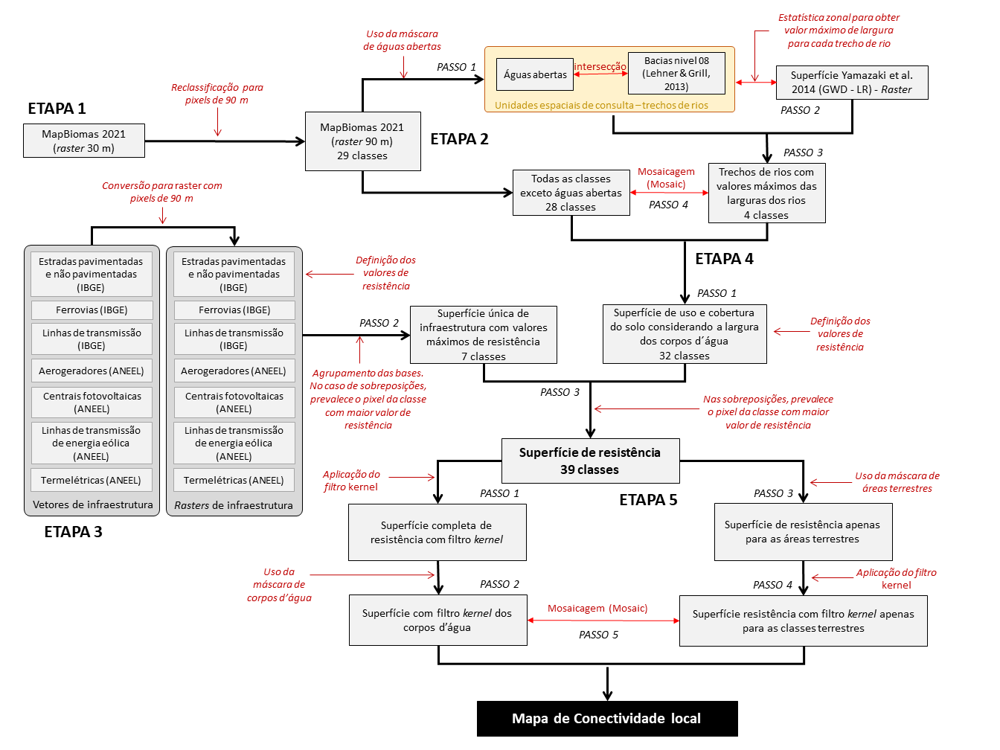

1 Conectividade local
A análise de conectividade local é uma das camadas utilizadas para gerar o mapa de resiliência da paisagem. A conectividade local é calculada sobre uma superfície de resistência ao movimento dos organismos na paisagem. Essa superfície representa, por meio da atribuição de pesos, o grau de dificuldade que os diferentes tipos de usos e coberturas do solo oferecem à movimentação dos organismos, sendo as coberturas naturais aquelas com menor resistência e as superfícies mais antropizadas (ex. áreas urbanas, áreas agrícolas), com maior resistência.
A superfície de resistência foi calculada usando como base os dados de uso e cobertura do solo fornecida pelo MapBiomas. A essa base foram incorporadas informações sobre a largura dos rios e também dados sobre infraestrutura de transporte e de energia. Ao longo da análise para gerar a superfície de resistência, primeiro foram atribuídos os valores de resistência à tabela com as classes de uso e cobertura do solo do MapBiomas e depois foram acrescentadas as classes de largura dos corpos d’água, bem como as classes de infraestrutura de transporte e de energia, com pesos de resitência específicos para cada classe.
Essas análises foram realizadas no ArcGis 10.5. Todas as ferramentas do ArcGis 10.5 descritas aqui podem ser acessadas no ícone de busca.
O fluxograma da análise de conectividade local é apresentado na (fluxgeral?) e pode ser dividido em cinco etapas principais:
- Etapa 1: Reamostragem do MapBiomas
- Etapa 2: Largura dos corpos d’água
- Etapa 3: Infraestrutura de transporte e de energia
- Etapa 4: Valores de resistência e combinação das bases de dados
- Etapa 5: Aplicação de filtros e camada final
